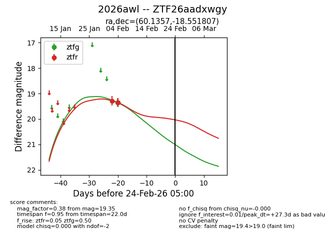
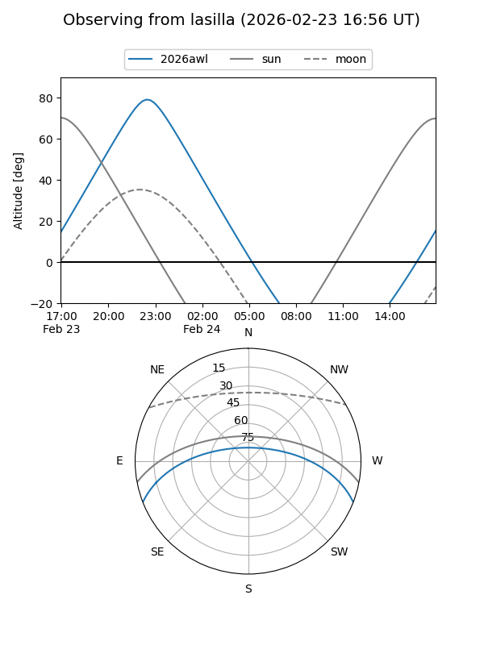
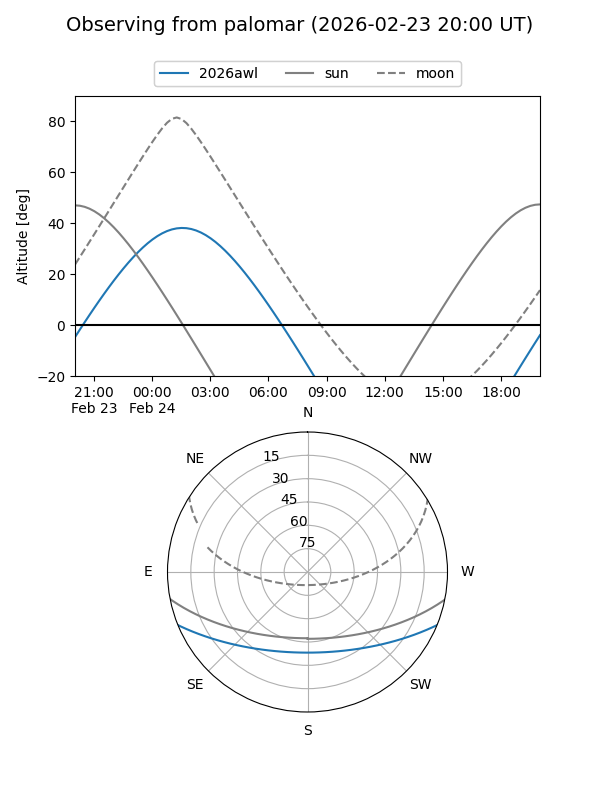

2026awl
Target 2026awl at 2026-02-24 09:08
Aliases and brokers:
FINK: link
Lasair: link
ALeRCE: link
TNS: link
YSE: link
alt names
ZTF26aadxwgy (ztf,fink_ztf)
2026awl (tns,yse)
Coordinates:
equatorial (ra, dec) = 60.1357,-18.55181
equatorial (HMS+DMS) = 04:00:32.56,-18:33:06.50
galactic (l, b) = (212.0984,-45.85057)
Flags:
Photometry:
last ztfg=19.35, ztfr=19.35
1 ztfg, 2 ztfr detections
Lightcurve

Visibility


Additional plots